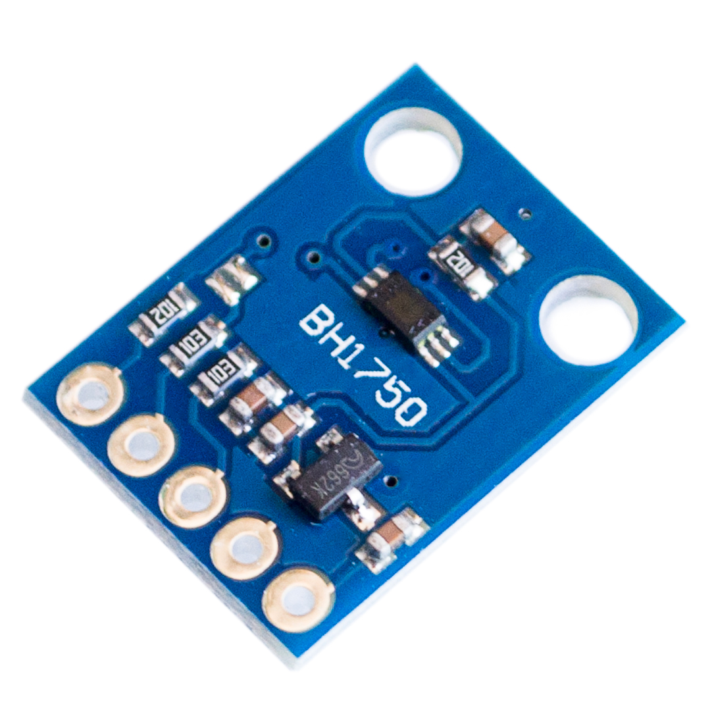

BH1750 Ambient Light Sensor¶
The bh1750 sensor platform allows you to use your BH1750 (datasheet, Aliexpress, mklec) ambient light sensor with esphomelib. The I²C bus is required to be set up in your configuration for this sensor to work.

BH1750 Ambient Light Sensor. Images from Aliexpress and mklec.
# Example configuration entry
sensor:
- platform: bh1750
name: "Living Room Brightness"
address: 0x23
update_interval: 15s
Configuration variables:¶
- name (Required, string): The name for the sensor.
- address (Optional, int): Manually specify the i^2c address of the sensor. Defaults to
0x23(address if address pin is pulled low). If the address pin is pulled high, the address is0x5C. - resolution (Optional, string): The resolution of the sensor in lx. One of
4.0,1.0,0.5. Defaults to0.5(the maximum resolution). - update_interval (Optional, Time): The interval to check the sensor. Defaults to
15s. See Default Filter. - id (Optional, ID): Manually specify the ID used for code generation.
- All other options from Sensor and MQTT Component.